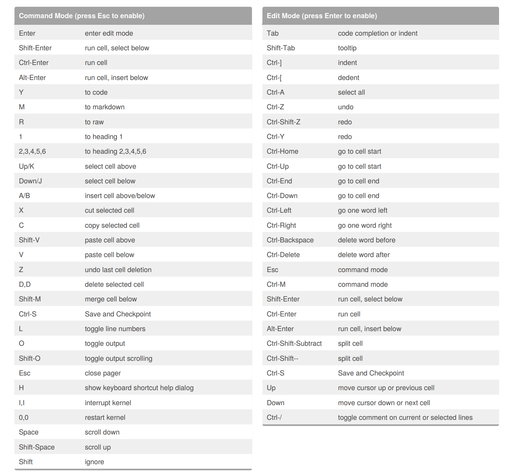

### This is python
print("This is a python code cell")This is a python code cellJupyter is a web-based interactive development environment that supports multiple programming languages, however most commonly used with the Python programming language.
The interactive environment that Jupyter provides enables students, scientists, and researchers to create reproducible analysis and formulate a story within a single document.
Lets take a look at an example of a completed Jupyter Notebook: Example Notebook
Markdown is a markup language that uses plain text formatting syntax. This means that we can modify the formatting our text with the use of various symbols on our keyboard as indicators.
Some examples include:
Now I’ll showcase some examples of how this formatting is done:
Headers:
Text modifications:
Emphasis, aka italics, with asterisks or underscores.
Strong emphasis, aka bold, with asterisks or underscores.
Combined emphasis with asterisks and underscores.
Strikethrough uses two tildes. Scratch this.
Lists:
Links:
http://www.umich.edu
The University of Michigan’s Homepage
To look into more examples of Markdown syntax and features such as tables, images, etc. head to the following link: Markdown Reference
A notebook kernel is a “computational engine” that executes the code contained in a Notebook document. There are kernels for various programming languages, however we are solely using the python kernel which executes python code.
When a notebook is opened, the associated kernel is automatically launched for our convenience.
### This is python
print("This is a python code cell")This is a python code cellA kernel is the back-end of our notebook which not only executes our python code, but stores our initialized variables.
### For example, lets initialize variable x
x = 1738
print("x has been set to " + str(x))x has been set to 1738### Print x
print(x)1738Issues arrise when we restart our kernel and attempt to run code with variables that have not been reinitialized.
If the kernel is reset, make sure to rerun code where variables are intialized.
## We can also run code that accepts input
name = input("What is your name? ")
print("The name you entered is " + name)It is important to note that Jupyter Notebooks have in-line cell execution. This means that a prior executing cell must complete its operations prior to another cell being executed. A cell still being executing is indicated by the [*] on the left-hand side of the cell.
print("This won't print until all prior cells have finished executing.")There is an edit and a command mode for jupyter notebooks. The mode is easily identifiable by the color of the left border of the cell.
Blue = Command Mode.
Green = Edit Mode.
Command Mode can be toggled by pressing esc on your keyboard.
Commands can be used to execute notebook functions. For example, changing the format of a markdown cell or adding line numbers.
Lets toggle line numbers while in command mode by pressing L.
There are a lot of shortcuts that can be used to improve productivity while using Jupyter Notebooks.
Here is a list:

Note: Coursera provides embedded jupyter notebooks within the course, thus the download is not a requirement unless you wish to explore jupyter further on your own computer.
Official Installation Guide: https://jupyter.readthedocs.io/en/latest/install.html
Jupyter recommends utilizing Anaconda, which is a platform compatible with Windows, macOS, and Linux systems.
Anaconda Download: https://www.anaconda.com/download/#macos